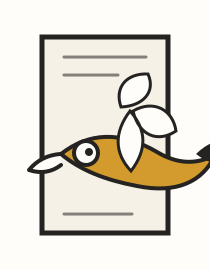
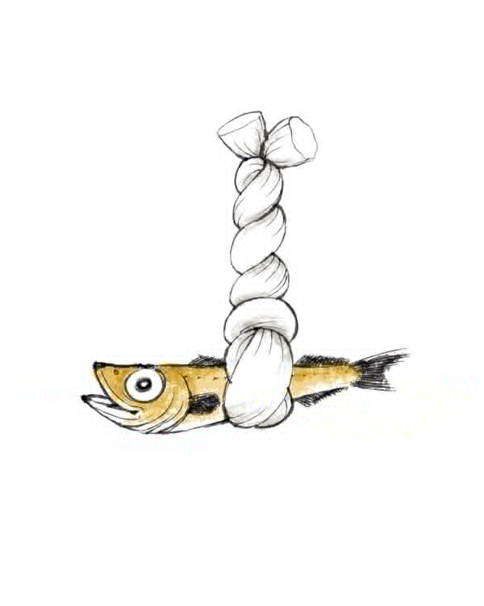
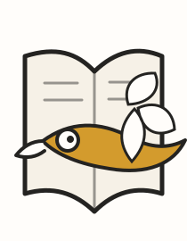
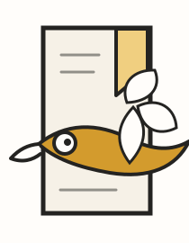

생각을 정리하는 기술
머릿속에 흩어진 아이디어를 기록과 실행으로 연결하는 방법을 배우는 중입니다.
Reading sketch shelf
읽은 책, 읽는 중인 책, 다시 펼치고 싶은 문장을 여백이 넉넉한 개인 서가처럼 모아둡니다.

표지는 분위기용 컬러 블록으로 두고, 책 제목과 감상은 언제든 직접 바꿀 수 있게 구성했습니다.

머릿속에 흩어진 아이디어를 기록과 실행으로 연결하는 방법을 배우는 중입니다.

짧지만 계속 돌아오게 되는 문장들을 모아둔 책처럼, 나의 취향을 선명하게 만듭니다.

장소보다 태도를 기억하게 만드는 산문. 여행기록 페이지와 함께 다시 보고 싶은 책입니다.